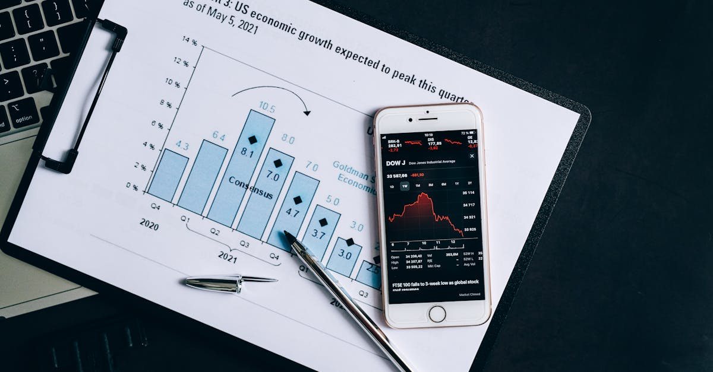

Le FMI, Gardien de la Stabilité Économique Mondiale
Depuis sa création, le Fonds Monétaire International (FMI) s'est imposé comme le pompier financier de la planète. Sa mission principale : assurer la stabilité du système monétaire international, prévenir les crises économiques et aider les pays membres en difficulté. Dans un monde en constante mutation, marqué par des tensions géopolitiques croissantes, des guerres commerciales et l'émergence disruptive de l'intelligence artificielle, la question se pose : cette institution centenaire peut-elle encore relever les défis du 21ème siècle ? Historiquement, le FMI a joué un rôle crucial en fournissant des liquidités aux nations confrontées à des déficits de balance des paiements ou à des crises de dette. Son bilan est émaillé d'interventions dans des contextes variés, allant de la crise asiatique de 1997 aux crises européennes plus récentes. Cependant, son modèle de gouvernance, hérité en grande partie du système de Bretton Woods, est souvent pointé du doigt. La répartition des droits de vote, par exemple, reflète encore largement le poids économique des pays au sortir de la Seconde Guerre mondiale, une structure qui peine à s'adapter à la montée en puissance de nouvelles économies. Cette inertie structurelle soulève des interrogations quant à sa capacité à répondre avec agilité aux chocs économiques inédits de notre ère. L'institution, souvent perçue comme une autorité suprême, doit naviguer entre les intérêts divergents de ses membres tout en maintenant sa crédibilité et son efficacité. L'enjeu est de taille : comment maintenir la confiance dans un système financier mondial de plus en plus complexe et interconnecté ?
👉 À lire : Crise au Moyen-Orient : Quel impact sur vos investissements ?

Gouvernance et Droits de Vote : Un Héritage à Réformer ?
Le cœur du débat sur la pertinence du FMI réside souvent dans sa structure de gouvernance. Les droits de vote au sein de l'institution, qui déterminent le poids de chaque pays dans les décisions clés, sont calculés selon une formule complexe incluant la quote-part (liée à la taille de l'économie nationale) et d'autres facteurs. Or, cette formule a peu évolué, maintenant un pouvoir de décision disproportionné entre les mains des pays développés traditionnels. Les économies émergentes, comme la Chine ou l'Inde, dont le poids dans l'économie mondiale a considérablement augmenté, se retrouvent sous-représentées. Gita Gopinath, ancienne directrice générale adjointe du FMI, souligne que cette stabilité de la gouvernance est en partie voulue, particulièrement en période d'incertitude géopolitique accrue. Elle permettrait d'éviter des bouleversements potentiellement déstabilisateurs. Cependant, Kevin Gallagher, professeur à l'Université de Boston, critique cette rigidité, arguant qu'elle freine l'adaptation du FMI aux réalités économiques actuelles. Il prône une réforme des quotes-parts pour mieux refléter la puissance économique contemporaine et accroître la légitimité des décisions prises. Cette réforme est essentielle pour que le FMI reste un acteur crédible et pertinent, capable de répondre aux besoins variés de l'ensemble de ses membres. L'enjeu n'est pas seulement théorique ; il impacte directement la capacité du FMI à mobiliser des ressources et à imposer ses programmes de réformes, souvent conditionnés à des prêts difficiles. Une gouvernance plus inclusive pourrait également ouvrir la voie à des solutions plus innovantes, peut-être intégrant des approches plus nuancées que le traditionnel plan d'austérité.
👉 À lire : IA : Risques Cyber et Opportunités d'Investissement
L'Austérité : Une Recette Toujours Pertinente ?
L'une des critiques récurrentes adressées au FMI concerne les programmes d'ajustement structurel qu'il impose souvent aux pays recevant une aide financière. Ces programmes incluent généralement des mesures d'austérité : réduction des dépenses publiques, coupes dans les services sociaux, privatisations, et réformes fiscales visant à équilibrer rapidement les budgets nationaux. Si l'objectif est de restaurer la confiance des marchés et de stabiliser l'économie, ces politiques ont souvent des conséquences sociales douloureuses. Les populations les plus vulnérables en subissent généralement le plus lourd tribut, avec une augmentation du chômage et une dégradation des services publics essentiels comme la santé et l'éducation. Des voix s'élèvent pour questionner la pertinence universelle de cette approche. Le FMI a-t-il suffisamment intégré les leçons tirées des crises passées ? Peut-on véritablement sortir durablement d'une crise en sacrifiant le capital humain et le tissu social ? L'émergence de l'intelligence artificielle et la nécessité d'investir massivement dans la formation et l'innovation soulèvent de nouvelles questions. Faut-il privilégier la rigueur budgétaire immédiate au détriment des investissements d'avenir ? Des alternatives existent-elles ? Certains experts suggèrent que le FMI pourrait adopter une approche plus graduelle, axée sur la croissance et le développement à long terme, tout en offrant des filets de sécurité sociale plus robustes. L'idée est de trouver un équilibre entre la discipline financière nécessaire et la préservation du potentiel de croissance future, un point crucial pour les stratégies d'épargne intelligente et d'investissement automatisé qui visent la pérennité.

L'IA et les Nouvelles Frontières Économiques
L'intelligence artificielle transforme radicalement le paysage économique mondial. Elle impacte la productivité, l'emploi, la finance et même la nature même de la création de valeur. Pour le FMI, cette révolution technologique représente à la fois un défi et une opportunité. D'une part, l'IA exacerbe les inégalités potentielles, tant entre les pays qu'au sein des nations, en favorisant les économies et les travailleurs capables de s'adapter à ces nouveaux outils. D'autre part, elle offre des possibilités inédites pour améliorer l'efficacité des politiques économiques, la prévision des crises et la gestion des finances publiques. Comment le FMI peut-il intégrer l'IA dans ses propres opérations ? L'utilisation d'algorithmes d'apprentissage automatique pourrait permettre une analyse plus fine et plus rapide des données économiques mondiales, améliorant ainsi la détection précoce des risques systémiques. Des outils d'IA pourraient également aider à concevoir des programmes d'aide plus ciblés et plus efficaces, prenant en compte la complexité des situations locales. L'institution pourrait même jouer un rôle de catalyseur en promouvant des cadres réglementaires internationaux pour l'IA, afin d'en maximiser les bénéfices tout en en maîtrisant les risques. Cela pourrait inclure des discussions sur la fiscalité des entreprises technologiques, la protection des données et la nécessité d'une collaboration internationale pour éviter une course au développement non régulé. Pour les investisseurs individuels, comprendre l'impact de l'IA sur les marchés est devenu essentiel, un domaine où les solutions d'épargne intelligente basées sur l'IA peuvent offrir un avantage compétitif.
Tensions Géopolitiques et Fragmentation Économique
Le monde actuel est marqué par une montée des tensions géopolitiques. Les conflits armés, les rivalités entre grandes puissances et les politiques protectionnistes fragmentent l'économie mondiale. Ces développements remettent en question les principes de coopération internationale qui ont longtemps sous-tendu le système financier mondial. Le FMI, en tant qu'institution multilatérale par excellence, se retrouve en première ligne face à ces défis. Comment peut-il opérer efficacement dans un environnement où la confiance entre les nations est érodée ? La guerre en Ukraine, par exemple, a eu des répercussions économiques mondiales majeures, notamment sur les prix de l'énergie et des denrées alimentaires, affectant de manière disproportionnée les pays les plus pauvres. Le FMI a dû mobiliser des ressources considérables pour aider les pays les plus touchés. Parallèlement, les disputes commerciales, notamment entre les États-Unis et la Chine, créent de l'incertitude et perturbent les chaînes d'approvisionnement mondiales. Cette fragmentation pourrait conduire à une reconfiguration des flux commerciaux et financiers, avec des risques de duplication des infrastructures et une perte d'efficacité globale. Le FMI doit-il adopter une posture plus active pour promouvoir le dialogue et la coopération, ou se contenter de gérer les conséquences des crises ? La question de sa capacité à rester un arbitre neutre et crédible est centrale. Dans ce contexte, la diversification des investissements, encouragée par des stratégies d'épargne intelligentes, devient une précaution indispensable pour les particuliers face à l'instabilité croissante.

Le Rôle des Institutions Financières Internationales face aux Nouveaux Risques
Au-delà du FMI, l'architecture financière internationale, composée d'institutions comme la Banque Mondiale, l'Organisation Mondiale du Commerce (OMC) et d'autres banques régionales de développement, est également mise à l'épreuve. Les crises climatiques, les pandémies et les cyberattaques représentent de nouveaux risques systémiques qui transcendent les frontières traditionnelles. Ces institutions doivent-elles mieux coordonner leurs actions pour faire face à ces menaces globales ? La collaboration interinstitutionnelle est devenue plus cruciale que jamais. Par exemple, la lutte contre le changement climatique nécessite des investissements massifs dans les énergies renouvelables et l'adaptation, un domaine où le FMI, la Banque Mondiale et les banques régionales de développement ont des rôles complémentaires à jouer. Le FMI pourrait, par exemple, aider les pays à intégrer les coûts du changement climatique dans leur politique budgétaire, tandis que la Banque Mondiale financerait des projets d'infrastructure verte. L'OMC, quant à elle, pourrait jouer un rôle dans l'établissement de règles commerciales favorisant la transition écologique. Cependant, la coordination n'est pas toujours aisée, souvent entravée par des mandats divergents et des rivalités institutionnelles. La capacité de ces institutions à s'adapter collectivement aux nouveaux risques déterminera en grande partie la résilience de l'économie mondiale. Pour les épargnants, comprendre ces dynamiques macroéconomiques et leur impact potentiel sur les marchés financiers est essentiel pour construire des portefeuilles diversifiés et résilients, une tâche facilitée par les outils d'analyse prédictive de l'investissement automatisé.
L'Adaptation par la Technologie : L'Avenir du FMI ?
Face à ces défis multidimensionnels, le FMI explore activement comment la technologie, et notamment l'intelligence artificielle, peut renforcer son mandat. L'institution cherche à améliorer ses capacités d'analyse, de surveillance et de diffusion de l'information économique. Par exemple, l'utilisation de l'analyse de données massives (Big Data) et de l'IA permet d'obtenir des aperçus plus rapides et plus précis sur la santé économique des pays membres. Des outils comme le « Fiscal Monitor » ou le « World Economic Outlook » bénéficient déjà de ces avancées pour fournir des analyses plus pointues. Le FMI s'intéresse également à l'utilisation de la technologie pour améliorer la transparence et l'efficacité de l'aide financière. Des plateformes numériques pourraient faciliter le suivi des fonds déboursés et garantir qu'ils atteignent bien les objectifs fixés, réduisant ainsi les risques de corruption ou de mauvaise gestion. De plus, le FMI joue un rôle croissant dans le dialogue sur la réglementation des crypto-actifs et des monnaies numériques, des innovations technologiques qui pourraient remodeler le paysage monétaire mondial. Comment ces nouvelles formes de monnaie s'intègrent-elles dans le système financier international ? Quelles sont les implications pour la stabilité monétaire et la politique économique ? Le FMI doit apporter des réponses claires et proposer des cadres adaptés. L'adoption de technologies avancées par le FMI n'est pas seulement une question d'efficacité opérationnelle ; elle est essentielle pour maintenir sa pertinence dans une économie mondiale de plus en plus numérisée et interconnectée, un environnement où les stratégies d'épargne intelligente tirent parti des mêmes outils pour optimiser les rendements.
Perspectives : Un FMI Réinventé pour une Économie en Mutation
Le Fonds Monétaire International se trouve à la croisée des chemins. Les crises multiples – sanitaires, géopolitiques, climatiques, technologiques – exigent une adaptation profonde de ses structures et de ses méthodes. La gouvernance doit devenir plus inclusive pour refléter la réalité économique du 21ème siècle. Les outils d'analyse et d'intervention doivent intégrer les possibilités offertes par l'intelligence artificielle et les technologies numériques. La philosophie même des programmes d'ajustement doit évoluer pour concilier la nécessité de la discipline budgétaire avec les impératifs de croissance durable, d'inclusion sociale et d'investissement dans l'avenir. Comme le souligne Gita Gopinath, une certaine stabilité est nécessaire, mais elle ne doit pas se transformer en immobilisme. Le défi pour le FMI est de trouver le juste équilibre : maintenir son rôle de prêteur en dernier ressort et de gardien de la stabilité financière, tout en devenant un partenaire plus agile, plus innovant et plus représentatif des besoins de l'ensemble de ses membres. L'institution doit prouver qu'elle peut non seulement réagir aux crises, mais aussi anticiper les défis futurs et accompagner la transition vers une économie mondiale plus résiliente, plus juste et plus durable. Pour les particuliers et les entreprises, comprendre l'évolution du rôle du FMI et son impact sur les marchés financiers est une composante clé d'une stratégie d'investissement avisée. Les solutions d'épargne intelligente, en analysant ces tendances macroéconomiques, peuvent aider à naviguer dans cette complexité et à construire un avenir financier plus sûr.
Conclusion
Le FMI, tel un phare dans la tempête économique, continue de guider les nations à travers les eaux tumultueuses de la finance mondiale. Cependant, les vagues de changements – de l'intelligence artificielle aux tensions géopolitiques – redessinent l'horizon. L'institution, forte de son expérience, doit impérativement moderniser sa gouvernance et ses outils pour rester pertinente. L'intégration de l'IA dans ses analyses et ses opérations, ainsi qu'une réflexion sur des programmes d'aide plus équilibrés, sont des pistes prometteuses. Si le FMI parvient à s'adapter, il renforcera sa position de pilier essentiel pour la stabilité économique globale. Pour l'épargnant averti, suivre ces évolutions macroéconomiques et comprendre comment elles influencent les marchés est fondamental. C'est dans cette compréhension que réside la clé d'une épargne intelligente et d'un investissement automatisé performant, capable de naviguer avec succès dans un monde en perpétuelle mutation, en tirant parti des opportunités tout en maîtrisant les risques.